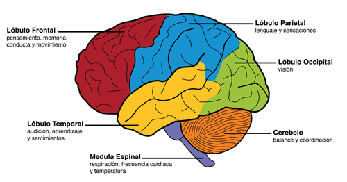

Alzheimer
Fecha: 10 de septiembre de 2024
Autores: Jani Natasha Paredes Villalba y Lucía Giménez Pelegrín
Descripción:
La enfermedad de Alzheimer es un trastorno cerebral degenerativo que empeora con el tiempo. Se caracteriza por la acumulación de proteínas anormales en el cerebro, como las placas de beta amiloide y los ovillos neurofibrilares de proteína tau. Estos depósitos interfieren en la comunicación neuronal, lo que lleva a la muerte progresiva de las células cerebrales. Es la causa más común de demencia, afectando la memoria, el pensamiento, el comportamiento y las habilidades sociales, y es incapacitante en las fases avanzadas. En Estados Unidos, aproximadamente 6.5 millones de personas de 65 años o más padecen esta enfermedad.
Causas:
- Placas de beta amiloide: Acumulaciones tóxicas que interrumpen la comunicación entre las neuronas.
- Ovillos neurofibrilares: Formados por la proteína tau alterada, que interfiere en el sistema de transporte interno de las neuronas.
- Defectos en la apoptosis: Pueden contribuir a la persistencia de clones autorreactivos de células B y T, lo que podría desencadenar enfermedades autoinmunes como el lupus.
- Factores genéticos: Menos del 1% de los casos están vinculados a mutaciones genéticas que aseguran el desarrollo de la enfermedad. Otros factores de riesgo incluyen la edad avanzada, antecedentes familiares, traumatismos craneales, síndrome de Down, el sexo (siendo más prevalente en mujeres), consumo excesivo de alcohol, contaminación ambiental y patrones de sueño deficientes.
Síntomas:
Olvido de eventos o conversaciones recientes. Pérdida más severa de la memoria, dificultades para realizar tareas cotidianas, problemas con el lenguaje y el razonamiento. Los síntomas conductuales incluyen depresión, aislamiento social, desconfianza, cambios de humor y desinhibición.
Los pacientes pueden olvidar los nombres de sus seres queridos, tener dificultades para hablar y moverse, y perder la capacidad de realizar tareas básicas como vestirse o comer.
Pruebas y exámenes:
- Evaluación médica y neurológica: Incluye revisión de síntomas, historial médico, y pruebas cognitivas y de memoria.
- Pruebas de imagen: Como tomografía computarizada (TC), resonancia magnética (RM) y tomografía por emisión de positrones (PET), que ayudan a detectar cambios estructurales en el cerebro.
- Análisis de líquido cefalorraquídeo: Para detectar la presencia de proteínas anormales como el beta amiloide y la tau.
Tratamientos:
The treatment is palliative because at the moment there is no cure.
Expectativas:
El Alzheimer es una enfermedad progresiva e incurable que causa un deterioro continuo de la memoria, las habilidades cognitivas y físicas. Aunque algunos medicamentos pueden retrasar los síntomas, el pronóstico final es la pérdida completa de la independencia. Las complicaciones en las etapas avanzadas, como infecciones o malnutrición, suelen llevar a la muerte.
Los lóbulos del cerebro.
